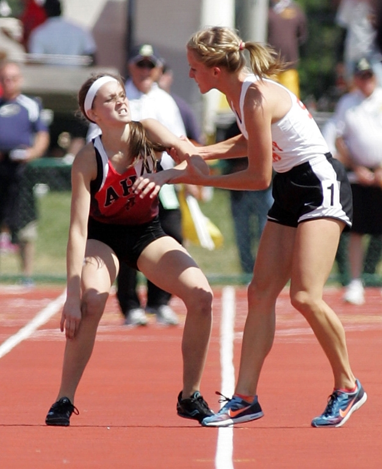

Meghan Vogel trčala je na 3200 metara na državnom prvenstvu Teksasa. Samo 200 metara od cilja vidjela je posrnulu suparnicu Arden McMath. Nije to htjela ignorirati
Mlada američka srednjoškolka dospjela je na naslovnice nakon nevjerojatnog poteza koji je u današnje vrijeme "znanstvena fantastika". Odrekla je rezultata kako bi pomogla suparnici i praktički je odnijela kroz ciljnu ravninu. Meghan Vogel imala je dvije utrke u danu na državnom prvenstvu Teksasa. Na 1600 metara je pobijedila, a nakon sat vremena došao je red na utrku na 3200 metara. Nije više imala snage. - Prva dva kruga bila sam dobro. A onda sam počela osjećati umor.
Pogledala sam majku Ann koja me trenira i kimnula joj glavom. Potrošila sam energiju na prošloj utrci - rekla je Meghan koja je bila posljednja. Samo 200 metara od cilja naletjela je na Arden McMath koja je jedva hodala. Dvaput je padala i dvaput se podizala. Meghan to nije htjela ignorirati.
Uzela ju je pod ruku i s njom ušla u cilj, no tako da Arden bude ispred nje. - Ne sjećam se dobro svega. Znam da sam je pokupila i pomogla joj. Trudila sam se da je ne ozlijedim. Zaslužila je biti ispred mene - rekla je Meghan. Iako pravila propisuju diskvalifikaciju mlade sportašice, organizatori to nisu htjeli napraviti. - Bilo mi je ljepše pomoći svojoj suparnici nego pobijediti u prošloj utrci na 1600 metara - dodala je Meghan koja je dobila ovacije za svoj nesebični potez. - Mogla je jednostavno zaobići Arden. Izabrala je pomoći joj. Nikad nisam vidio tako nešto na državnom prvenstvu. Bio je to pravi fair play – rekao je trener posrnule atletičarke Paul Hunter.